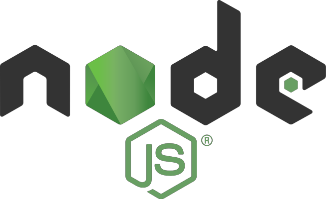
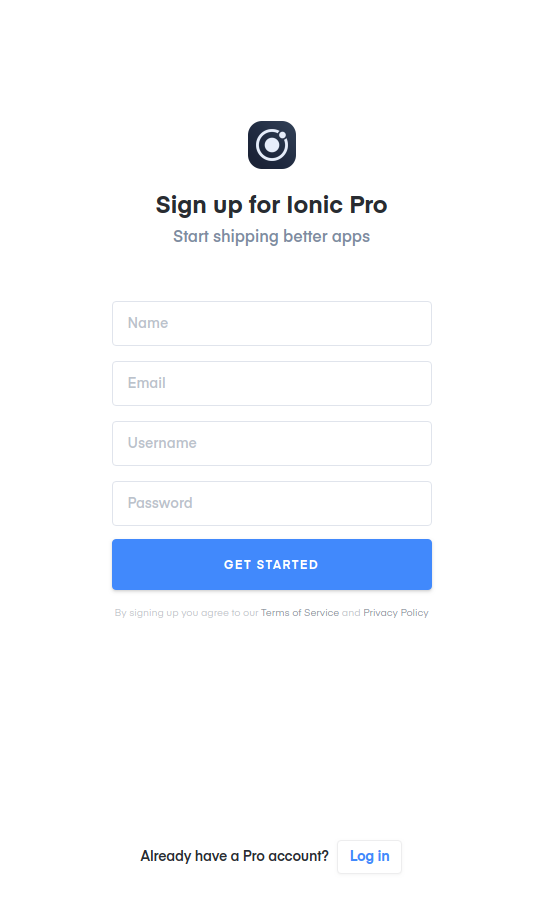
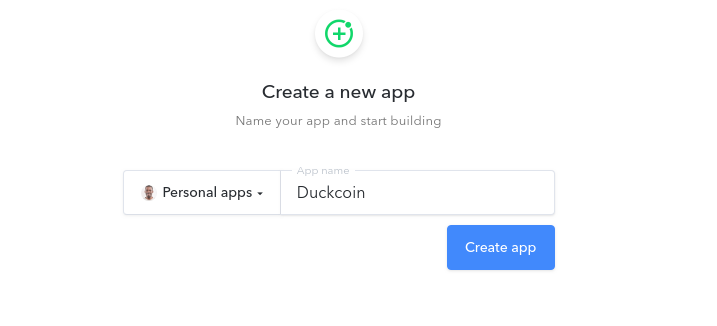
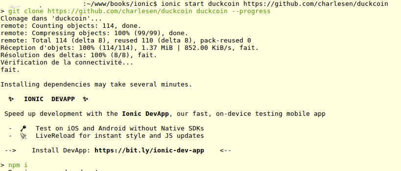
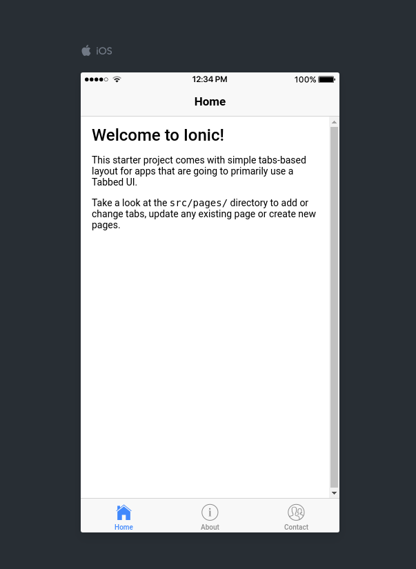
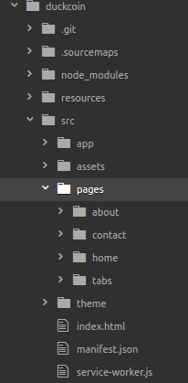
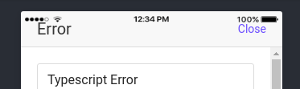

Chap 3 - Installation de Ionic et première prise en main
Ionic utilise un certain nombre d'outils permettant de créer rapidement une application mobile. Pris séparement, ils sont plus ou moins efficace, voir indépendant, mais mis en ensemble, ils sont d'une redoutable efficacité.
Parmi ces outils nous pouvons citer principalement :
Ionic CLI : c'est le couteau suisse de Ionic, un en de fonction disponible en ligne de commandes pour créer une application, la compiler, la déployer,...
Apache Cordova : un framework open-source développé par la Fondation Apache. Il permet de créer des applications pour différentes plateformes en HTML, CSS et JavaScript.
NodeJS : est un logiciel permettant de développer et d’exécuter du code JavaScript côté serveur, contrairement à ce qu’on a l’habitude de voir avec le javascript côté client.
NPM : le gestionnaire de paquet de NodeJS
Angular : un framework Javascript développé par Google
TypeScript : un langage de programmation libre et open source développé par Microsoft qui a pour but d’améliorer et de sécuriser la production de code JavaScript.
SASS : un langage de génération de feuilles de style (CSS dynamique)
...
NodeJS et NPM
NodeJS en bref

Depuis son commencement, JavaScript, a été, comme vous le savez très certainement, est un langage dit côté client. Mais les choses ont quelque peu évolué avec NodeJS : cette technologie permet en effet d'executer du code écrit en JavaScript, aussi bien sur un navigateur (côté client), que côté serveur, tout comme des langages comme le Python ou encore le PHP.
De plus, NodeJS, à l'instar de Ionic, est Open Source, gratuit et disponible pour différentes plateformes (Windows, Linux, Unix, Mac OS,...)
NPM : Node Package Manager
Comme son nom peut le suggérer, NPM est le gestionnaire de packet de NodeJS, qui étant très modulaire, voit son ecosystème constamment enrichie par des modules développés par les membres de sa large communauté.
Installation
Windows
Pour installer NodeJS, il suffit simplement d'aller à l'adresse : https://nodejs.org/en/download/, de télécharger le gestionnaire d'installation au format .msi et se laisser guider. Le gestionnaire installera également NPM.
Ouvrez un invite de commande en saisissant Windows + R, puis cmd, et depuis cet invite, saisir :
node -v
Vous devriez voir s'afficher la version actuelle de NodeJs.
Mac OS
L'installation sous Mac OS est à peu près la même que sous Windows car il vous suffit de cliquer sur la version Node correspondant à cet OS. D'ailleurs en visitant simplement le site https://nodejs.org/en/download/, une version adaptée à votre système d'exploitation vous sera proposée automatiquement.
Linux (Ubuntu)
sous linux et en particulier Ubuntu, il vous suffit de saisir les commandes suivantes depuis un invite de commandes :
$ sudo apt-get update
$ sudo apt-get install nodejs npm
une fois l'installation effective, il faut encore créer les liens symboliques suivants :
$ sudo ln -s /usr/bin/nodejs /usr/local/bin/node
$ sudo ln -s /usr/bin/npm /usr/local/bin/npm
Pour vérifier que tout s'est bien passé, il vous suffit de saisir la commande suivante qui vous retournera la version actuelle de Node :
$ node -v
v8.11.1
Ionic CLI et Cordova
Une fois Node et NPM installés, le reste se passera en ligne de commande. Ouvrez donc votre terminal préféré et saisissez les commandes suivantes pour installer Ionic et Cordova :
$ sudo npm install -g ionic cordova
Le paramètre "-g" permet une installation global de ces outils. De cette manière, vous n'aurez pas besoin d'être dans un repertoire particulier pour utiliser les commandes ionic ou cordova.
Ce paramètre implique aussi que vous devrez lancer les commandes précédentes en tant qu'Admin sous Windows (clic-droit, démarrer l'invite de commande en tant qu'administrateur) et que sous Linux, vous êtes obligé d'utiliser le "sudo".
Avant d'aller plus loin, il sera nécessaire d'installer d'autres logiciels comme le SDK de Java ou celui d'Android. Si ces logiciels sont déjà installé, vous pourrez directement passer à la suite, sinon, suivez le guide.
Autres utilitaires
Java SDK
Windows et Mac OS
Pour installer le SDK de Java sous Windows et Mac, il vous suffit de visiter le site : http://www.oracle.com/technetwork/java/javase/downloads/jdk8-downloads-2133151.html et de choisir le fichier adapté à votre machine (32 ou 64 bits)
Linux
Mise à jour des dépôts
$ sudo add-apt-repository ppa:openjdk-r/ppa
$ sudo apt-get update
Installation d'OpenJDK
sudo apt-get install openjdk-8-jdk
Android SDK
La meilleur façon d'installer le SDK d'Android est encore d'installer Android Studio. Pour ce faire, rien de plus simple, il suffit de visiter le site https://developer.android.com/studio/index.html#downloads et de télécharger le paquet associé à votre OS.
Windows
Une fois le téléchargement effectué, vous n'aurez plus qu'à lancer l'installation en cliquant sur le fichier au format .exe et suivre le setup. L'installation du SDK se fera en même temps.
Voilà, c'est tout.
Mac OS
- Lancer l'installation en cliquant sur le fichier au format .dmg téléchargé précédemment.
- Glisser-déposer (Drag-n-drop) ensuite Android Studio dans le dossier Applications
- Le setup devrait ensuite finaliser l'installation du SDK
Voilà.
Linux
- Décompresser le fichier .zip téléchargé précédemment dans un dossier approprié. Je vous propose le dossier /opt/ de manière à le partager entre les différents acteurs de votre OS.
- Ouvrez un invite de commandes (CTRL + ALT + T) et executer le fichier /opt/android-studio/bin/studio.sh.
- Suivez le setup
Si votre OS est une machine 64-bit, vous aller devoir installer quelques dépendances logicielles :
$ sudo apt-get install libc6:i386 libncurses5:i386 libstdc++6:i386 lib32z1 libbz2-1.0:i386
Xcode et ios-sim (Mac OS uniquement)
Pour installer Xcode, il vous suffit de visiter l'url suivante https://developer.apple.com/xcode/ et de cliquer sur "Download".
Pour l'émulateur ios-sim, depuis votre terminal, saisissez la commande suivante :
$ sudo npm install -g ios-sim
$ ios-sim –version # Pour vérifier que tout s'est bien passé
Git
Ionic utilise le gestionnaire de dépôt Git dans son workflow de développement actuel. Pour l'installer, rien de plus simple, il vous suffit d'aller sur la page de téléchargement suivante : https://git-scm.com/downloads et choisir le paquet correspondant à votre OS.
Sous Linux, il est également possible de l'installer en saisissant simplement la commande :
$ apt install git
Installation via un script Bash (Ubuntu)
Un script trouvé sur github1 , et que j'ai un peu adapté, fait assez bien le travail, car il vous permet d'installer tous ces utilitaires via un seul fichier bash.
#!/bin/bash
# Ubuntu Developer Script For Ionic Framework
# Created by Nic Raboy
# http://www.nraboy.com
#
#
# Télécharge et configure les logiciels suivants :
#
# Java JDK
# Apache Ant
# Android
# Apache Cordova
# Ionic Framework
# Gradle
HOME_PATH=$(cd ~/ && pwd)
INSTALL_PATH=/opt
ANDROID_SDK_PATH=/opt/android-sdk
NODE_PATH=/opt/node
GRADLE_PATH=/opt/gradle
# x86_64 ou i686
LINUX_ARCH="$(lscpu | grep 'Architecture' | awk -F\: '{ print $2 }' | tr -d ' ')"
# Android Linux SDK pour les architectures x64 et x86
ANDROID_SDK_X64="http://dl.google.com/android/android-sdk_r24.4.1-linux.tgz"
ANDROID_SDK_X86="http://dl.google.com/android/android-sdk_r24.4.1-linux.tgz"
# Gradle
GRADLE_ALL="https://services.gradle.org/distributions/gradle-2.9-all.zip"
if [ "$LINUX_ARCH" == "x86_64" ]; then
# Add i386 architecture
dpkg --add-architecture i386
fi
# Mise à jour des dépots Ubuntu
apt-get update
cd ~/Desktop
if [ "$LINUX_ARCH" == "x86_64" ]; then
wget -c "$ANDROID_SDK_X64" -O "android-sdk.tgz" --no-check-certificate
wget -c "$GRADLE_ALL" -O "gradle.zip" --no-check-certificate
tar zxvf "android-sdk.tgz" -C "$INSTALL_PATH"
unzip "gradle.zip"
mv "gradle-2.9" "$INSTALL_PATH"
cd "$INSTALL_PATH" && mv "android-sdk-linux" "android-sdk"
cd "$INSTALL_PATH" && mv "gradle-2.9" "gradle"
# Dépendances pour les architecture x86
apt-get install -qq -y libc6:i386 libgcc1:i386 libstdc++6:i386 libz1:i386
else
wget -c "$ANDROID_SDK_X86" -O "android-sdk.tgz" --no-check-certificate
wget -c "$GRADLE_ALL" -O "gradle.zip" --no-check-certificate
tar zxvf "android-sdk.tgz" -C "$INSTALL_PATH"
unzip "gradle.zip"
mv "gradle-2.9" "$INSTALL_PATH"
cd "$INSTALL_PATH" && mv "android-sdk-linux" "android-sdk"
cd "$INSTALL_PATH" && mv "gradle-2.9" "gradle"
fi
cd "$INSTALL_PATH" && chown root:root "android-sdk" -R
cd "$INSTALL_PATH" && chmod 777 "android-sdk" -R
cd ~/
# MAJ du PATH de manière persistante
echo "export PATH=\$PATH:$ANDROID_SDK_PATH/tools" >> ".profile"
echo "export PATH=\$PATH:$ANDROID_SDK_PATH/platform-tools" >> ".profile"
echo "export PATH=\$PATH:$GRADLE_PATH/bin" >> ".profile"
# MAJ du PATH de manière temporaire le temps de l'installation
export PATH=$PATH:$ANDROID_SDK_PATH/tools
export PATH=$PATH:$ANDROID_SDK_PATH/platform-tools
export PATH=$PATH:$GRADLE_PATH/bin
# Installation du JDK, Apache Ant et Git
apt-get -qq -y install default-jdk ant
apt-get install git
# MAJ de la variable d'environnement JAVA_HOME
export JAVA_HOME="$(find /usr -type l -name 'default-java')"
if [ "$JAVA_HOME" != "" ]; then
echo "export JAVA_HOME=$JAVA_HOME" >> ".profile"
fi
# Installation d'Apache Cordova et du framework Ioni
npm install -g cordova
npm install -g ionic
cd "$INSTALL_PATH" && chmod 777 "node" -R
cd "$INSTALL_PATH" && chmod 777 "gradle" -R
# Suppression des fichiers d'installation
cd ~/Desktop && rm "android-sdk.tgz"
cd ~/Desktop && rm "nodejs.tgz"
cd ~/Desktop && rm "gradle.zip"
echo "----------------------------------"
echo "Redémarrer votre session Ubuntu pour finaliser l'installation..."
Copier le code ci-dessus dans fichier install_ionic.sh puis executer le :
$ chmod u+x install_ionic.sh
$ ./install_ionic.sh
Redémarrez ensuite votre machine.
Création d'un compte Ionic PRO
Cette étape va nous permettre de disposer d'un compte sur le cloud de Ionic. On en parle en détails au Chapitre 10, mais globalement, Ionic Cloud permet de :
- Compiler une application sans devoir installer sur son local toutes les dépendances nécessaires à cette compilation.
- Faire tester votre application en avant-première via l'application Ionic View
- Gérer les erreurs levées dans l'application mobile
- ...
La création d'un compte est gratuite et pour ce faire, rendez-vous à l'adresse https://dashboard.ionicjs.com/signup et remplissez le formulaire pour compléter votre inscription.

Connectez-vous ensuite à Ionic PRO et cliquez sur le bouton "New app" pour créer une application que l'on liera plus tard à notre application mobile.
Donnez un nom à cette nouvelle app. Par exemple "Duckcoin".

Une fois l'application créée, un identifiant unique lui est attribuée. Cet identifiant nous sera utile à la création de notre application depuis notre poste de travail.
Voilà, vous y êtes. On va donc pouvoir créer notre première application mobile.
Première application Ionic
Pour créer votre première application, rien de plus simple :
$ ionic start monAppli tabs
✔ Creating directory ./monAppli - done!
✔ Downloading and extracting tabs starter - done!
? Would you like to integrate your new app with Cordova to target native iOS and Android? (y/N)
A la question "Would you like to integrate your new app with Cordova to target native iOS and Android?" saisir "y".
Et à la question "Install the free Ionic Pro SDK and connect your app?" , répondez aussi par un "y".
Vous allez devoir entrez vos identifiants et générer une paire clé privé/publique en choisissant "Automatically setup new a SSH key pair for Ionic Pro"
Suivez ensuite le setup et garder les valeurs par défaut (choisir "Y" à chaque fois).
La syntaxe générique d'une création d'application est la suivante :
$ ionic start [<name>] [<template>]
| Entrée | Description |
|---|---|
| name | C'est le nom de votre application au format Camel par ex. Vous pouvez également l'écrire tout en minuscule (ce que je recommande) |
| template | C'est le template ionic de votre choix. Pour afficher la liste des templates disponible actuellement, vous pouvez saisir la commande ionic start --list (voir ci-dessous) |
$ ionic start --list
tabs ............... ionic-angular A starting project with a simple tabbed interface
blank .............. ionic-angular A blank starter project
sidemenu ........... ionic-angular A starting project with a side menu with navigation in the content area
super .............. ionic-angular A starting project complete with pre-built pages, providers and best practices for Ionic development.
conference ......... ionic-angular A project that demonstrates a realworld application
tutorial ........... ionic-angular A tutorial based project that goes along with the Ionic documentation
aws ................ ionic-angular AWS Mobile Hub Starter
tabs ............... ionic1 A starting project for Ionic using a simple tabbed interface
blank .............. ionic1 A blank starter project for Ionic
sidemenu ........... ionic1 A starting project for Ionic using a side menu with navigation in the content area
maps ............... ionic1 An Ionic starter project using Google Maps and a side menu
il est également possible de créer une application à partir d'un dépot git :
$ ionic start monappli_sur_git https://github.com/charlesen/monappli_sur_git
Une fois votre application créée, accédez au dossier nouvellement créé, puis démarrer le projet :
$ cd monappli
$ ionic serve -lc
Ionic devrait ensuite ouvrir votre application depuis votre navigateur préféré.
Création du projet Duckcoin
Comme nous l'avons vu, il est possible de créer une application mobile à partir d'un dépôt git. C'est ce que nous allons faire pour l'application DuckCoin.
Ouvrez donc votre terminal et saisissez les commandes suivantes :
$ ionic start duckcoin https://github.com/charlesen/duckcoin

Démarrez ensuite l'application avec la commande serve :
$ cd duckcoin
$ ionic serve -lc

Struction du projet
Faisons un peu le tour de l'anatomie d'un projet type sous Ionic.
./src/index.html
C'est l'entrée principale du projet. Il faut se rappeler q'une application Hybride utilisation la technologie WebView du téléphonequi se comporte comme un mini-navigateur à l'intérieur duquel on peut afficher un site web, qui est votre projet.
A l'intérieur de ce fichier, Ionic va aller chercher le tag <ion-app> à l'intérieur duquel vos différents écrans seront chargés.
<ion-app></ion-app>
On retrouve également du code javascript, généré par Ionic et qu'il ne sera pas nécessaire de modifier :
<!-- Ionic's root component and where the app will load -->
<ion-app></ion-app>
<!-- The polyfills js is generated during the build process -->
<script src="build/polyfills.js"></script>
<!-- The vendor js is generated during the build process
It contains all of the dependencies in node_modules -->
<script src="build/vendor.js"></script>
<!-- The main bundle js is generated during the build process -->
<script src="build/main.js"></script>
./src/
C'est à l'intérieur que l'on retrouve le code de l'application à proprement. Lorsque l'on voudra rajouter de nouveaux écrans, de la logique métier,...c'est ici que cela se passera.
On retrouve du code écrit en TypeScript (nous en reparlerons en détails au chapitre 6) dont l'extension de fichiers est .ts.
On retrouve aussi du htlm, du css,...
Ecran Mobile = 1 Fichier .ts + 1 Fichier .html + 1 Fichier .scss
le fichier src/app/app.module.ts est le point d'entrée métier de notre application.
@NgModule({
declarations: [MyApp, ContactPage, HomePage],
imports: [BrowserModule, IonicModule.forRoot(MyApp)],
bootstrap: [IonicApp],
entryComponents: [MyApp, ContactPage, HomePage],
providers: []
})
export class AppModule {}
C'est dans ce fichier que l'on décide quelle composant (ici MyApp) sera le composant principal. On expliquera ces notions de composants dans le chapitre 8.
Dans le chapitre suivant, nous allons apprendre à customiser notre application pour qu'elle soit un peu plus à notre image.Mais en attendant, exerçons-vous un peu.
Exercez-vous
0) Faites le tour de l'application pour découvrir un petit peu son architecture

1) Renommer les différents onglets :
Home en Accueil
About en Minage
Contact en Portefeuille
Que se passe t-il dans la console à chaque enregistrement ?
2) Faites les modifications suivantes dans les onglets
Accueil : changez le contenu de l'onglet par le contenu de la page d'accueil du site https://duckcoin.charlesen.fr. Et renommer la page, de Home à Duckcoin. (src/pages/home/home.html). Les images sont à placer dans le dossier src/assets/imgs.
Minage : Changer l'intitulé de la page en Minage.
Portefeuille : Changer l'intitulé de la page en Portefeuille.
3) Editez le fichier theme/variables.scss et modifier le contenu de la façon suivante :
// Named Color Variables
// --------------------------------------------------
// Named colors makes it easy to reuse colors on various components.
// It's highly recommended to change the default colors
// to match your app's branding. Ionic uses a Sass map of
// colors so you can add, rename and remove colors as needed.
// The "primary" color is the only required color in the map.
$colors: (
primary: #488aff,
secondary: #32db64,
danger: #f53d3d,
light: #f4f4f4,
dark: #222,
duckcoin : #df4932 // <!-- ICI
);
Enregistrez, puis dans le fichier src/pages/home/home.html, effectuez les modifications suivantes
<ion-header>
<ion-navbar color="duckcoin"><!-- ICI -->
<ion-title>Home</ion-title>
</ion-navbar>
</ion-header>
<ion-content padding>
LE CONTENU QUE VOUS AVEZ MODIFIÉ JUSTE AVANT ;-)
</ion-content>
Que s'est-il passé ?
Faites la même chose pour l'ensemble des onglets.
4) Adaptez le code hexadécimal de la couleur duckcoin pour qu'il soit le plus proche de vos goûts. Le meilleur code couleur sera utilisé dans la suite du projet :-)
5) Renommez les fichiers about.html en mining.html, about.scss en mining.scss, about.scss en mining.scss, about.ts en mining.ts. Puis, renommer le dossier about (src/pages/about) en mining (src/pages/mining).
Dans le fichier mining.ts, remplacez AboutPage par MiningPage.
Que se passe-t-il dans la console ? Dans votre navigateur ? Quelles solutions proposeriez-vous ? Voir par exemple le contenu du fichier src/pages/mining/mining.ts.

6) Editer le fichier src/app/app.module.ts de manière à corriger le maximum d'erreurs.
7) Effectuez les actions précédentes pour l'onglet Portefeuille (renommage + resolutions de bugs) : contact.html en wallet.html, contact.scss en wallet.scss, contact.scss en wallet.scss, contact.ts en wallet.ts.

8) Ajustez le style CSS de la page d'accueil pour rendre le contenu de l'onglet un peu plus joli : src/pages/home/home.scss. N'hésitez pas utiliser l'inspecteur de votre navigateur (F12).
1. Ubuntu Ionic Installer : https://github.com/nraboy/ubuntu-ionic-installer/blob/master/ubuntu_ionic_installer.sh ↩